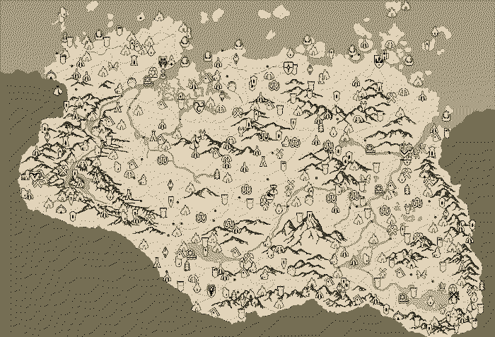
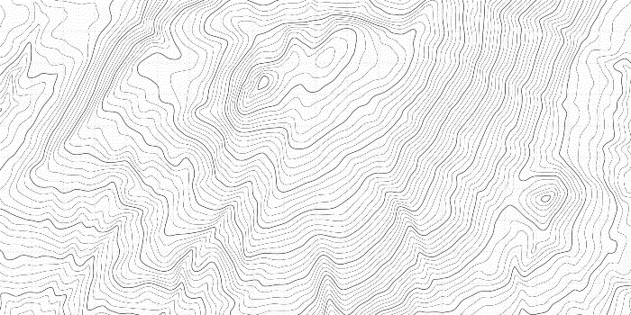

I don't think you can see it yet. Maybe you can. Somewhere behind the blank dead stare of strangers and friends glad to be unhappy. They're breaking and so are you. Everything stapled onto dreamy castles of dust built on clouds of stale nitrogen nightmares will crack and fall and with so far to fall there's no wonder you see others breaking in the fall, violent explosions of feathers, black and white, and splinters of bone. No bother. Everything will break. One day you will awake and all you know will be undone and when you look around you there will be nothing left except your two feet and the ground to stand on. With luck you'll be there, I'll be there, and we can look up at the blank death of space, the living breathing pulsating milky way sweeping across a blackness filled with nothing but hairpin cracks of light. To my sister, father, mother, wife, Romeo, Hilma, and new life unborn, the only way to mend is for everything to break.
The work with this landscape is at a standstill. Certain conditions have lead to me having to focus on applying for jobs and this process seems to zap all energy from me. However, the work proceeds mentally and some aspects of this landscape are becoming clear.
The work that is most pressing is the outgoing links of the predicaments and their motivations. I believe these links are the key for a gestalt of our human predicament to start appearing. Nothing is ever a singular problem in isolation and no solution can be treated as a closed loop. As of writing this there are still 224 predicaments left that require re-linking as well as motivations written for those links. This can be facilitated by a continued work of...
Some predicaments fit neatly together like houses in a village, mountains on an island, or nations of a continent. There is an ongoing but non-published process of sorting and categorising predicaments. This serves two functions. Firstly, it's mentally much easier to work in chunks. Secondly, it is crucial for the map-making. See, the map-making, I have changed my approach...
There are two ideas currently floating around and I sense it might be necessary or at least valuable to pursue both. The first is to scrap the tiny part that has been mapped (with a bit too much detail) so far and instead simplify it to something whose landscape is clearly visible but where each predicament appears as a point of interest, similarly to something like this, drawn from the map for The Elder Scrolls V: Skyrim:
But there is, as mentioned, a second idea, an idea which includes the amount of links each predicament has. This idea is less clear in my mind but could it be reasonable to make a topographic map where every predicament category is a mountain range and each mountain a predicament? The height of the mountain could then be directly related to how many links the predicament has. Perhaps?
In summary, I will revise how the actual map is to be made and then most likely illustrate and then publish all of it at once instead of in tedious, badly hand-drawn chunks.
There is also a growing desire to turn away from the predicaments, the burning building of modernity, and turn towards life, towards what to do, what to envision. Currently, I just call this...
250 counter-elements to each predicament, hopefully with even more cosmic implications. I have started to write some of these already and will start publishing material soon. It is still mostly in research mode, where I collect resources, quotes, thoughts, ideas, and practices. The overlay excites me but it also scares me. Why? I'm not sure. There is, perhaps, a certain distance between one's self and one's complaints, as if expressing what one dislikes is just a stone cast into space. What one truly believes is good, beautiful, true, or right points straight to one's soul, it is a deeply personal exposure and each stone cast forms a structure reflecting one's deepest desires and dreams. It's easy to believe that everyone is too dumb for their own good. It's not that easy to wish that everyone could become wiser. Is it because it risks disappointment? Or it forces one to be clear about one's priorities? With luck and perseverance, some of these questions might approach answers as I dive into the work with the overlay.
What then? 250 predicaments and 250 overlaid possibilities. What has been achieved? I'm not sure.
The more I work with creating this landscape, the more aware I become of its purpose. You mustn't worry that I am somehow blissfully unaware of the fact that few, if any, will read all of it, or even any of it. The purpose of this landscape, at its core, is, I believe, a public research project that will lead to something else, something more accessible and, dare I say, straight-forward. The Predicament Landscape is a 5CD collection of free improvisation jam sessions that will, or might, be condensed into an album short enough to fit on an LP. If you know how Talk Talk recorded their last two albums you might have good idea of what I mean. If you don't, shame on you. There is much uncertainty about how this will happen or what it will concretely be but since I am the way I am, I often prefer the improvisational jamming to the album. But that's me. I want to be of service to others and for all of this to have some sort of empowering effect on people, on you reading this.
A writer is a person who cares what words mean, what they say, how they say it. Writers know words are their way towards truth and freedom, and so they use them with care, with thought, with fear, with delight. By using words well they strengthen their souls. Story-tellers and poets spend their lives learning that skill and art of using words well. And their words make the souls of their readers stronger, brighter, deeper.Ursula K. Le Guin
I don't see myself as a writer, in fact I don't see myself as anything, but I will continue to write and continue to do so with ferocity. Somehow, I will have to make it work while simultaneously prioritising providing for those I love. Challenging. But what is life if it lacks challenges?
---
If you want to have a chat about anything related to this, send me an email!
Teach the children. We don't matter so much, but the children do. Show them daisies and the pale hepatica. Teach them the taste of sassafras and wintergreen. The lives of the blue sailors, mallow, sunbursts, the moccasin flowers. And the frisky ones – inkberry, lamb's-quarters, blueberries. And the aromatic ones – rosemary, oregano. Give them peppermint to put in their pockets as they go to school. Give them the fields and the woods and the possibility of the world salvaged from the lords of profit. Stand them in the stream, head them upstream, rejoice as they learn to love this space they live in, its sticks and leaves and then the silent, beautiful blossoms. Attention is the beginning of devotion.Mary Oliver
Blessings to you all
/David
December. After switching to a different antibiotic I am now finally getting better from the pneumonia that's been most of my existence for the past three weeks. It has resulted in me missing quite a lot. That's life. It has also made me rethink how to progress with the landscape but more on that soon... First, I need to keep resting and return to normal health.
There is talk of snow. It's still a bit too warm for any snow to build up but I wholeheartedly welcome the falling flakes supposed to arrive later today. Meanwhile, Hilma sleeps under the blanket on the couch and I'm burning some incense on our balcony. The espresso I just brewed up turned out surprisingly well. I must really remember to add silicone grease to the piston seal on the espresso machine soon... It's getting too creaky.
Surprisingly little has been added to the landscape as of late. The predicaments in the Metacrisis of Evil have had all of their links remade and motivated and I'll spend some time today correcting some errors there. Illustrations for the Metacrisis of Evil are almost finished, just need to digitise them and somehow add them to the main svg. Not quite sure how to make sure it all displays properly but I'm sure I'll figure it out.
Some other news:
Work is progressing slowly. The illustrating of the Metacrisis of Evil has met some resistance but should be finished either at the end of the current month or at the start of the next. I've made it so the website (sort of) functions on mobile devices and I've also done a quick correction and styling check on half of the predicaments. More work to come, as always.
Other than that, we are now well and truly in autumn. The autumnal palette has swept across the landscape and most migratory birds have passed us by. It darkens early and the sun rises timidly most days. All seasons have their beauty but autumn displays its somber grace proudly. Some music that has accompanied this autumnal phase of predicament work:
The autumn equinox has been followed by days of darkness, pouring rain, and, consequently, calmness and coffee indoors. Many thoughts regarding balance and equilibrium have moved around in my mind lately. Anyways... I will be starting the process of illustrating and expanding the predicaments in the category currently named Metacrisis of Evil. The following predicaments are included in this category/continent:
If you have any suggestions, ideas, complaints, or just want to get in touch, I happily discuss this with anyone who is interested. Just shoot me an email at david@punk.ist.
There is now an illustration up on the start page and the predicaments in the ecological metacrisis are properly filled out. Onward!
Have added link motivations to some of the predicaments in the Ecological Metacrisis part of the landscape. Have almost finished illustrating that part of the map as well, just have to digitise it and figure out how to make it clickable and functional.
Drawing has started and I'm currently sketching out predicaments with pencil and ink. Fun!
Write link motivations for Climate Change and start drawing/illustrating the map for the part of the landscape named Ecological Metacrisis which contains: Climate change, Biodiversity loss, Desertification, Deforestation, Ecological crisis, Extreme weather, Lost of insect biomass, Microplastics, Soil erosion, Ocean acidification, Pollution, and Waste. Drawing will take a long time.
Big update fixing links and a bunch of other crap.
Bulk edit all (most?) predicaments.
Fixed the styling for predicaments 1-10 and added this Updates page.
Converted all Markdown to HTML and published the first beta version here.
Create the predicament landscape, write all predicaments, begin connecting them, enjoy living.